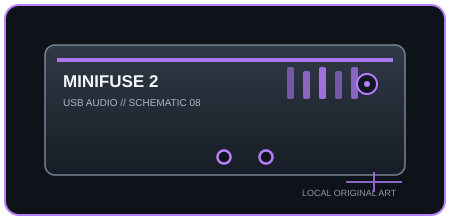

[ INDIVIDUAL COMPONENT // SOUND ]
Arturia MiniFuse 2
A compact two-channel USB interface with two combo inputs, loopback, and a USB hub port for peripherals.

IDENTIFICATION: Manufacturer/model: Arturia MiniFuse 2 USB-C audio interface. Verify the full model and hardware/firmware revision on the unit; similarly named generations may have different ports, drivers, or channel counts.
Specifications
| Catalog subcategory | USB audio interfaces |
|---|---|
| Model / SKU identity | Arturia MiniFuse 2 USB-C audio interface; model-level identity, not a retailer bundle SKU. |
| Analog, digital I/O and host channels | 2-in/2-out USB audio: two analog input channels through two combo XLR/TRS sockets; two balanced TRS line outputs, one stereo headphone output, loopback channels, and a downstream USB-A hub port (not an extra audio input). |
| Conversion, sample rate and bit depth | 24-bit; 44.1, 48, 88.2, 96, 176.4, and 192 kHz. |
| Mic preamps / phantom power | Two mic/line preamp channels with combo sockets; +48 V phantom power is switchable for condenser microphones. Input 2 accepts instrument/Hi-Z sources. |
| USB generation / class compliance | USB-C connector with USB 2.0 audio transport; USB-A hub port is for compatible peripherals. The interface is bus-powered, so host-port power and connected USB devices can affect stability. |
Drivers, host compatibility & latency
- macOS Core Audio and class-compliant iOS/iPadOS USB host use are available; Windows recording uses Arturia’s MiniFuse driver/ASIO package. Install current Arturia software and verify OS version; do not treat the USB hub as audio class support.
- Direct monitoring blends input with playback; DAW round-trip latency depends on driver, sample rate, buffer size, and computer load. Reducing the buffer trades lower monitoring delay for higher risk of clicks and dropouts.
- For predictable recording, match the interface and DAW sample rates, select the model-specific manufacturer driver where required, test the intended buffer under real session load, and retain a higher-buffer fallback for dense projects.
Identification and preservation notes
Photograph the underside model label and connector panel; record serial/model identifiers, revision, firmware, included power supply, optical mode, and installed driver version. Do not infer channel count or supported sample rate from a connector or product-family name alone.
Sources & further reading
- Arturia — MiniFuse 2 product pageManufacturer product overview and technical feature information.
- Arturia — MiniFuse 2 downloads and manualsManufacturer-hosted manual, driver, and software downloads.
Manufacturer documentation is the authority for exact revisions and supported hosts. Verify regional SKU and operating-system support against the physical unit.